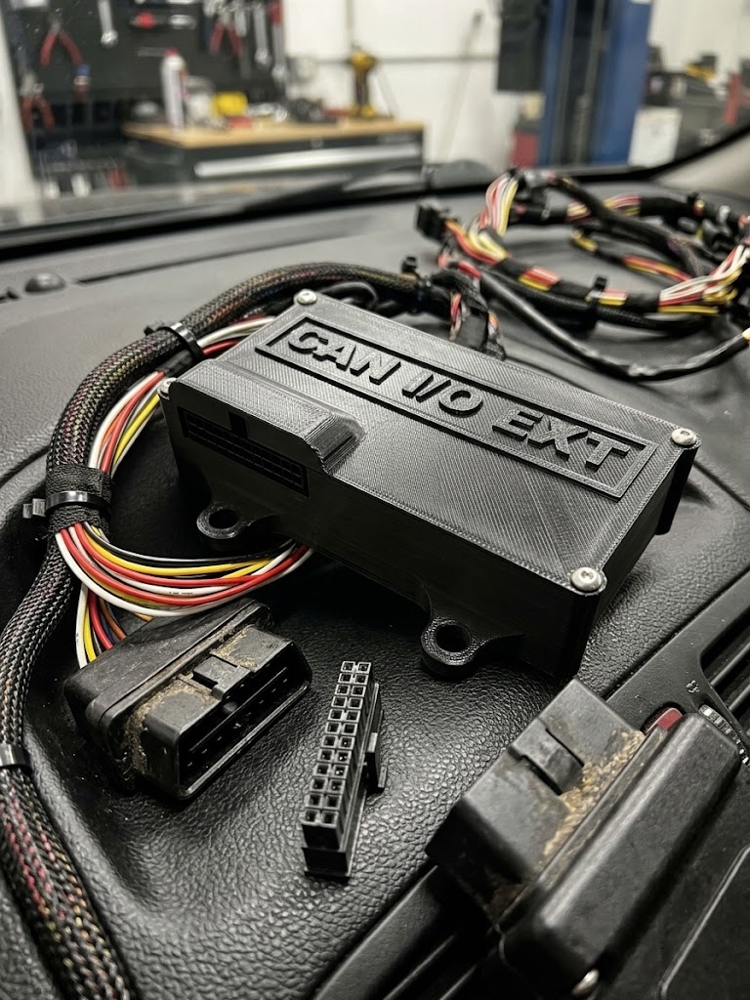
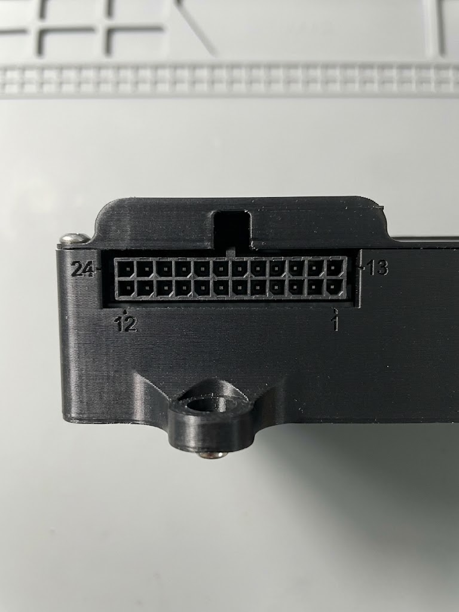

Terakhir diperbarui: 1 Oktober 2026
CAN IO Extender¶
Gambaran Umum¶

CAN IO Extender menambah input dan output ke Racedash lewat bus CAN yang sama dengan ECU. Modul ini membaca sensor dan saklar yang tidak diketahui ECU — misalnya lampu sein, rem tangan, lampu jauh, sensor tekanan tambahan, atau sensor kecepatan roda — lalu mem-broadcast-nya sebagai frame CAN yang bisa dibaca dash. Sebaliknya, dash juga bisa menyalakan output modul ini untuk menggerakkan relay, pompa, kipas, atau solenoid.
Modul bekerja mandiri: bitrate bus dideteksi sendiri, dan tidak ada yang perlu diatur lewat aplikasi. Fungsi tiap pin ditentukan saat pemasangan, sesuai kebutuhan kendaraan.
| Kemampuan | Jumlah | Keterangan |
|---|---|---|
| Analog input | 11 | Satu dipakai untuk tegangan aki; dua di antaranya sudah ber-pull-up untuk sensor NTC |
| Switch input 12 V | 4 | Berbagi pin dengan sebagian analog input |
| Hall / frequency input | 4 | Berbagi pin dengan sebagian analog input |
| Low-side output | 5 + 2 | Lima arus kecil, dua arus besar |
| High-side output | 2 | Mendukung PWM dan melaporkan fault |
| Logic output | 2 | Output sinyal 5 V atau 12 V |
Tujuh output tersedia sekaligus di konektor utama; dua lagi berbagi pin dengan logic output.
Konektor Utama (J2)¶
Semua kabel kendaraan masuk lewat satu konektor Molex Micro-Fit 3.0, 24 pin (2 baris × 12).
| Part number Molex | |
|---|---|
| Header di board | 43045-2400 |
| Konektor kabel (pasangannya) | 43025-2400, dengan terminal crimp female Micro-Fit 3.0 |

Dilihat dari depan modul dengan kait pengunci (tonjolan kecil di tengah atas konektor) menghadap ke atas, pin 1 ada di kanan bawah. Baris bawah berisi pin 1–12 dari kanan ke kiri, dan baris atas berisi pin 13–24 dari kanan ke kiri. Konektor kabel yang dilihat dari sisi masuk kabel, dengan kait pengunci di atas, memakai susunan yang sama.
| ▼ kait pengunci ▼ | ||||||||||||
|---|---|---|---|---|---|---|---|---|---|---|---|---|
| Atas | 24 12V | 23 LC1 | 22 LC2 | 21 HS1 | 20 LC3 | 19 OUT4 | 18 HS2 | 17 OUT5 | 16 LS2 | 15 LS1 | 14 CAN H | 13 CAN L |
| Bawah | 12 GND | 11 A1 | 10 A2 | 9 A3 | 8 A4 | 7 A5 | 6 A6 | 5 A7 | 4 A8 | 3 A9 | 2 A10 | 1 — |
| Pin | Fungsi | Pin | Fungsi |
|---|---|---|---|
| 1 | Tidak dipakai | 13 | CAN L |
| 2 | Input: A10 atau HALL4 | 14 | CAN H |
| 3 | Input: A9 atau HALL3 | 15 | Output LS1 (low-side, arus besar) |
| 4 | Input: A8 atau HALL2 | 16 | Output LS2 (low-side, arus besar) |
| 5 | Input: A7 atau HALL1 | 17 | Output LC5 atau LOGIC2 |
| 6 | Input: A6 atau SW4 | 18 | Output HS2 (high-side) |
| 7 | Input: A5 atau SW3 | 19 | Output LC4 atau LOGIC1 |
| 8 | Input: A4 atau SW2 | 20 | Output LC3 (low-side) |
| 9 | Input: A3 atau SW1 | 21 | Output HS1 (high-side) |
| 10 | Input: A2 (untuk sensor NTC) | 22 | Output LC2 (low-side) |
| 11 | Input: A1 (untuk sensor NTC) | 23 | Output LC1 (low-side) |
| 12 | Ground | 24 | 12 V dari kontak (switched) |
Penjelasan tiap kelompok pin ada di bagian Daya, Input, dan Output di bawah.
Daya, CAN, dan Terminasi¶
| Pin konektor | Fungsi |
|---|---|
| J2-24 | 12 V dari kontak (switched) |
| J2-12 | Ground |
| J2-14 | CAN H |
| J2-13 | CAN L |
Tersedia juga header CAN + daya 4 pin terpisah (J12) sebagai alternatif.
Terminasi: modul menyediakan resistor 120 Ω yang bisa diaktifkan di board. Aktifkan hanya kalau modul ini berada di salah satu ujung bus. Sebuah bus CAN perlu tepat dua terminator, dan menambah yang ketiga akan membuat komunikasi gagal.
Input¶
Delapan pin input bisa dipilih fungsinya, dan dua pin lagi khusus analog.
| Pin konektor | Dapat difungsikan sebagai |
|---|---|
| J2-9 | Analog input (A3) atau switch input 12 V (SW1) |
| J2-8 | Analog input (A4) atau switch input 12 V (SW2) |
| J2-7 | Analog input (A5) atau switch input 12 V (SW3) |
| J2-6 | Analog input (A6) atau switch input 12 V (SW4) |
| J2-5 | Analog input (A7) atau Hall / frequency input (HALL1) |
| J2-4 | Analog input (A8) atau Hall / frequency input (HALL2) |
| J2-3 | Analog input (A9) atau Hall / frequency input (HALL3) |
| J2-2 | Analog input (A10) atau Hall / frequency input (HALL4) |
| J2-11 | Analog input (A1), sudah ber-pull-up untuk sensor NTC |
| J2-10 | Analog input (A2), sudah ber-pull-up untuk sensor NTC |
Pull-up pada J2-10 dan J2-11 adalah yang dibutuhkan sensor NTC, seperti sensor suhu air atau suhu udara masuk. Sensor yang mengeluarkan tegangan 0–5 V sendiri — misalnya sensor tekanan — dipasang di pin analog mana pun.
SW1–SW4 menerima 12 V langsung. Gunakan untuk apa pun yang disaklar oleh 12 V kendaraan: lampu sein, lampu jauh, lampu rem, rem tangan.
HALL1–HALL4 membaca logic 5 V, tahan terhadap 12 V, dan keempatnya juga berfungsi sebagai frequency counter — cocok untuk sensor kecepatan roda atau flow meter.
Output¶
| Output | Pin konektor | Tipe | Keterangan |
|---|---|---|---|
| LC1 | J2-23 | Low-side, arus kecil | |
| LC2 | J2-22 | Low-side, arus kecil | |
| LC3 | J2-20 | Low-side, arus kecil | |
| LC4 | J2-19 | Low-side, arus kecil | Pin ini dipakai untuk LC4 atau LOGIC1 |
| LC5 | J2-17 | Low-side, arus kecil | Pin ini dipakai untuk LC5 atau LOGIC2 |
| LS1 | J2-15 | Low-side, arus besar | |
| LS2 | J2-16 | Low-side, arus besar | |
| HS1 | J2-21 | High-side | Mendukung PWM, melaporkan fault |
| HS2 | J2-18 | High-side | Mendukung PWM, melaporkan fault |
Ini kesalahan wiring yang paling sering terjadi: output low-side menyaklar sisi ground, jadi ujung beban yang lain harus di 12 V. Output high-side justru mengeluarkan 12 V, jadi ujung beban yang lain harus di ground. Tertukar berarti beban tidak akan bekerja.
Hanya HS1 dan HS2 yang menerima nilai PWM; output lain hanya on/off.
Logic output (LOGIC1 dan LOGIC2) adalah output sinyal, bukan driver coil. Tegangannya bisa dipilih 5 V atau 12 V saat pemasangan. Keduanya memakai pin yang sama dengan LC4 dan LC5, jadi pilih salah satu fungsi per pin.
!!! danger "Output mati sendiri kalau perintah berhenti" Semua output dimatikan bila perintah dari dash tidak diterima selama 500 ms, dan modul memang menyala dalam keadaan semua output mati. Jadi kalau dash mati atau kabel CAN lepas, pompa atau solenoid tidak akan terus menyala. Kondisi ini normal, bukan kerusakan.
Memakai dengan Racedash Pro (M4, M5, M7)¶
Bisa langsung dipakai tanpa ganti firmware, bersamaan dengan protokol ECU yang sedang aktif.
!!! tip "CAN ID: heksadesimal atau desimal"
Halaman ini menulis CAN ID dalam heksadesimal, misalnya 0x643. Beberapa
software, seperti rusEFI dan TunerStudio, menampilkan angka yang sama dalam
desimal: 0x643 = 1603.
Di DashTune, pilih tampilannya di **Settings → Format CAN ID**. Pilihan ini
juga berlaku di editor CAN Button pada layar dash. Di bawah setiap kolom CAN
ID, DashTune menampilkan padanannya, misalnya "= 1603 (desimal)". Angka yang
diawali `0x` selalu dibaca sebagai heksadesimal, apa pun pilihannya.
Lampu indikator dari saklar kendaraan¶
Di DashTune, buka pengaturan indikator, pilih mode CAN, lalu isi:
| Lampu | CAN ID | Byte | Bit | Sambungkan ke |
|---|---|---|---|---|
| Turn left | 0x643 |
0 | 0 | J2-9 |
| Turn right | 0x643 |
0 | 1 | J2-8 |
| High beam | 0x643 |
0 | 2 | J2-7 |
| Hand brake | 0x643 |
0 | 3 | J2-6 |
| Head light | 0x643 |
0 | 4 | J2-5 |
| Park light | 0x643 |
0 | 5 | J2-4 |
Pastikan keenam pin itu difungsikan sebagai switch input 12 V, dan biarkan pilihan invert dalam keadaan mati — modul sudah melaporkan 1 = aktif.
Nilai sensor tambahan¶
Nilai seperti tegangan aki, sensor analog, atau frequency input bisa ditampilkan lewat Custom Channel di DashTune. Custom Channel menumpang pada protokol ECU yang sedang aktif, jadi data ECU tetap terbaca seperti biasa.
Gunakan daftar frame di bagian berikutnya sebagai acuan CAN ID, posisi byte, dan skalanya.
Menyalakan output¶
Output dinyalakan lewat CAN Buttons: satu tombol untuk satu output, diatur
di DashTune atau langsung di layar dash. Semua tombol memakai CAN ID yang sama,
0x648 (desimal 1608), dan harus dalam mode Toggle. Selama tombol
menyala, dash mengirim ulang perintahnya terus-menerus. Tombol mode Momentary
hanya mengirim sekali, jadi outputnya akan mati lagi setelah 500 ms.
| Output | Byte | Nilai ON |
|---|---|---|
| LC1 | 0 | 1 |
| LC2 | 0 | 2 |
| LC3 | 0 | 4 |
| LC4 | 0 | 8 |
| LC5 | 0 | 16 |
| LS1 | 0 | 32 |
| LS2 | 0 | 64 |
| HS1 | 1 | 1 |
| HS2 | 1 | 2 |
| LOGIC1 | 1 | 4 |
| LOGIC2 | 1 | 8 |
Isi nilai OFF dengan 0 untuk semua tombol. Beberapa tombol boleh berada di byte yang sama; dash menggabungkannya, jadi LC1 dan LS1 bisa menyala bersamaan.
HS1 dan HS2 langsung menyala penuh. Untuk PWM, tambahkan satu tombol Toggle lagi di byte 2 (HS1) atau byte 3 (HS2), dengan nilai ON 1–254 sebagai duty, misalnya 128 untuk sekitar 50%. Selama tombol duty itu mati, outputnya kembali menyala penuh.
!!! note "Butuh firmware terbaru" Cara di atas memerlukan firmware Racedash dan firmware CAN IO Extender versi terbaru. Pada firmware lama, tombol-tombol yang berada di byte yang sama saling menimpa, dan modul mengabaikan perintah yang lebih pendek dari 4 byte.
Memakai dengan Racedash 3.5" dan 4"¶
!!! warning "Tidak bisa bersamaan dengan protokol ECU" Pada varian ini, modul hanya terbaca kalau protokol dash diset ke Custom, dan mode Custom menggantikan decoder ECU bawaan. Artinya dash bisa membaca modul ini atau ECU, tidak keduanya sekaligus. Kalau Anda butuh dua-duanya, gunakan Racedash Pro.
Langkahnya: set protokol dash ke Custom, samakan bitrate dengan bus, lalu susun channel-nya lewat DashTune. Semua nilai little-endian, jadi biarkan pilihan MSB first (Motorola) mati.
Kalau Anda memakai Custom CAN map untuk keperluan lain, jangan memakai CAN ID
0x640–0x67F (desimal 1600–1663) agar tidak bentrok dengan modul ini.
Data yang Dikirim Modul¶
CAN ID di bawah berlaku untuk modul node 0. Semua nilai little-endian.
| CAN ID | Desimal | Isi | Rate |
|---|---|---|---|
0x640 |
1600 | Tegangan aki, lalu AV1, AV2, AV3 | 50 Hz |
0x641 |
1601 | AV4, AV5, AV6, AV7 | 50 Hz |
0x642 |
1602 | AV8, AV9, AV10 | 50 Hz |
0x643 |
1603 | Status digital input, diagnosa, status output | 50 Hz |
0x644 |
1604 | Frekuensi HALL1–HALL4 | 20 Hz |
Frame analog (0x640–0x642) berisi empat nilai uint16 berurutan, dalam
milivolt. Tegangan aki sudah dikalikan faktor pembaginya, jadi angka 13800
berarti 13,8 V. Untuk menampilkan sebagai volt, pakai scale 0.001.
Frame digital (0x643):
| Byte | Isi |
|---|---|
| 0 | bit 0–3 = SW1–SW4, bit 4–7 = HALL1–HALL4 |
| 1 | bit 0–1 = fault high-side output |
| 2–3 | status output yang benar-benar aktif |
| 4 | bit 0 = failsafe aktif, bit 1 = bitrate sudah terkunci |
| 5–6 | uptime dalam detik |
| 7 | versi firmware dan nomor node |
Frame frekuensi (0x644) berisi empat nilai uint16 dalam satuan 0,1 Hz —
kalikan 0.1 untuk mendapatkan Hz.
Memakai Dua Modul¶
Satu bus bisa memuat sampai empat modul. Tiap modul harus memakai nomor node berbeda, yang ditentukan oleh file firmware yang di-flash. Nomor node menggeser blok CAN ID-nya:
| Node | Blok CAN ID | Desimal |
|---|---|---|
| 0 | 0x640–0x64F |
1600–1615 |
| 1 | 0x650–0x65F |
1616–1631 |
| 2 | 0x660–0x66F |
1632–1647 |
| 3 | 0x670–0x67F |
1648–1663 |
Firmware¶
Modul dikirim sudah berisi firmware untuk node 0. Flash ulang hanya diperlukan untuk memperbarui firmware, atau untuk modul kedua dan seterusnya di bus yang sama (Memakai Dua Modul).
Unduh¶
Ambil file .hex dari
github.com/mazduino/can-io-extender/releases.
Nama file menyebut nomor node-nya:
| File | Dipakai untuk |
|---|---|
can-io-extender-8mhz-node0.hex |
Modul pertama (bawaan pabrik) |
can-io-extender-8mhz-node1.hex |
Modul kedua |
can-io-extender-8mhz-node2.hex |
Modul ketiga |
can-io-extender-8mhz-node3.hex |
Modul keempat |
Pakai file berakhiran 8mhz. File 16mhz hanya untuk board yang sudah
dimodifikasi, dan hanya dipakai kalau tim Mazduino mengarahkan Anda ke sana.
Flash¶
Modul ini berbasis Arduino Mega 2560 dan di-flash lewat kabel USB-nya.
!!! warning "Lepas 12 V sebelum menyambungkan USB" Cabut konektor utama (J2) atau matikan kunci kontak dulu. Board akan mendapat daya dari USB selama proses flash.
Cara termudah: script flash. Unduh flash.bat (Windows) atau flash.sh
(macOS/Linux) dari halaman Releases yang sama. Script ini mengunduh firmware
yang benar sendiri, jadi file .hex tidak perlu diunduh terpisah.
- Windows: double-click
flash.bat, lalu ketik port COM saat ditanya (lihat di Device Manager, misalnyaCOM5). Untuk modul kedua dan seterusnya, jalankan dari Command Prompt dengan nomor node:flash.bat COM5 1. - macOS / Linux: pasang
avrdudedulu (brew install avrdudeatausudo apt install avrdude), lalu jalankan./flash.sh. Port dicari otomatis; nomor node ditulis setelah port:./flash.sh /dev/ttyUSB0 1.
Kalau ingin flash manual:
Windows — pakai XLoader atau AVRDUDESS:
- Sambungkan USB, lalu cari nomor port-nya di Device Manager (misalnya
COM5). - Di XLoader, pilih file
.hex, device Mega(ATMEGA2560), port tadi, dan baud rate 115200. - Klik Upload dan tunggu sampai muncul jumlah byte yang ter-upload.
macOS / Linux — pakai avrdude:
avrdude -p m2560 -c wiring -P /dev/ttyUSB0 -b 115200 -D \
-U flash:w:can-io-extender-8mhz-node0.hex:i
Ganti /dev/ttyUSB0 dengan port board Anda (di macOS biasanya
/dev/cu.usbserial-… atau /dev/cu.usbmodem…).
Setelah selesai, cabut USB dan sambungkan lagi 12 V. Output tetap mati sampai dash mengirim perintah; itu kondisi normal (failsafe), bukan tanda flash gagal.
Troubleshooting¶
| Gejala | Penyebab yang paling sering |
|---|---|
| Modul tidak pernah mengunci bitrate | CAN H dan CAN L tertukar, terminasi kurang, atau tidak ada perangkat lain yang mengirim di bus — modul mengunci pada frame valid pertama, jadi bus yang sepi tidak akan pernah terkunci |
| Bus terkunci, tetapi dash tidak menampilkan apa-apa | CAN ID di dash tidak sama dengan blok node modul, atau CAN ID diketik dalam notasi yang salah (643 dibaca desimal padahal yang dimaksud 0x643) — cek Settings → Format CAN ID di DashTune |
| Output tidak mau menyala | Dash belum mengirim perintah output, sehingga modul tetap dalam kondisi failsafe. Pastikan tombolnya memakai CAN ID 0x648 (1608) dan mode Toggle |
| Output menyala sebentar lalu mati | Tombolnya dalam mode Momentary. Ganti ke Toggle |
| LC4 atau LC5 tidak bekerja | Pin itu sedang difungsikan sebagai logic output — satu pin hanya bisa satu fungsi |
| Tegangan aki terbaca meleset | Rail 5 V board tidak tepat 5,000 V. Hubungi support@mazduino.com untuk firmware yang dikalibrasi ke board Anda |
| Switch input tidak terbaca | Pin itu masih difungsikan sebagai analog input, bukan switch input |